Annotation-free
Targets are computed directly from observed completion lengths, without any extra human labels or reward models.
UCSB + Apple collaborative research
Scalable value pretraining for token-level length modeling.
Length Value Model, or LenVM, treats remaining generation length as a value estimation problem. It predicts a bounded token-level signal during decoding, enabling precise length control, smooth performance-efficiency trade-offs, prompt-boundary length prediction, and interpretable generation dynamics.
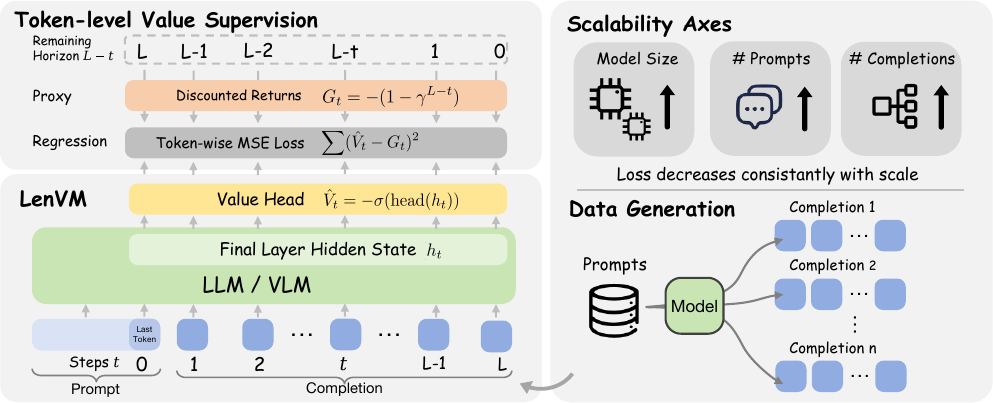
Architecture & Training Pipeline
At each decoding step, LenVM attaches a scalar head to the final hidden state and predicts a value in \( (-1, 0) \), giving a token-level estimate of the remaining generation horizon.
Method
LenVM starts from a constant negative reward at each non-terminal decoding step:
For a sampled completion of generated length \(L\), the discounted return from step \(t\) is:
This makes remaining generation length a bounded and monotone proxy of the remaining horizon, instead of regressing directly on raw token count.
A scalar value head is attached to the final-layer hidden state at each decoding step:
Training uses token-averaged mean squared error over sampled prompt-completion trajectories:
Supervision is dense because every non-terminal token contributes a target.
Targets are computed directly from observed completion lengths, without any extra human labels or reward models.
Every token position contributes supervision, rather than producing only one target for an entire response.
Rewards and returns are deterministically computed from the realized trajectory, avoiding additional annotation noise.
Supervision grows naturally with more prompts and more sampled completions per prompt, and scales with larger models.
Results
LenVM consistently improves exact length matching, exposes a better performance-efficiency frontier, predicts generation horizon from the prompt boundary, and scales cleanly as supervision grows.
On LIFEBench Equal To, LenVM lifts Qwen2.5-7B-Instruct from 30.9 to 64.8 length score.
On GSM8K around 200 tokens, LenVM keeps about 63% Pass@1 while the hard budget baseline is about 6%.
At 32B, mean relative error falls to 9.8% on math, 14.9% on code, and 17.1% on instruction following.
Training Mixture
| Domain | Dataset | Scale |
|---|---|---|
| Code | OpenCodeReasoning-2 (Python) | 1.42M |
| Instruction Following | WildChat | 529k |
| Math | DeepMath-103K | 103k |
LIFEBench
| Model | Equal To Deviation ↓ | Equal To Score ↑ | At Most Score ↑ | At Least Score ↑ |
|---|---|---|---|---|
| Closed-source frontier models | ||||
| GPT-4o | 74% | 35.5 | 77.9 | 98.5 |
| GPT-5.4 | 135% | 37.4 | 65.4 | 98.9 |
| GPT-5.4-thinking | 131% | 47.8 | 72.7 | 98.9 |
| Claude-Sonnet-4-6 | 105% | 34.1 | 62.9 | 100.0 |
| Claude-Sonnet-4-6-thinking | 124% | 51.3 | 69.3 | 100.0 |
| Claude-Opus-4-6 | 66% | 35.5 | 51.5 | 100.0 |
| Claude-Opus-4-6-thinking | 87% | 53.2 | 67.4 | 100.0 |
| Gemini-3-Flash-Preview | 123% | 40.3 | 57.3 | 99.6 |
| Gemini-3.1-Pro-Preview | 91% | 49.3 | 70.7 | 100.0 |
| Open models with LenVM guidance | ||||
| Qwen2.5-3B-Instruct | 83% | 25.6 | 92.1 | 94.6 |
| + LenVM (1.5B) | 56% | 62.6 | 93.0 | 93.1 |
| Qwen2.5-7B-Instruct | 71% | 30.9 | 98.5 | 89.1 |
| + LenVM (1.5B) | 44% | 64.8 | 96.1 | 99.5 |
| Qwen3-30B-A3B-Instruct | 90% | 36.8 | 87.0 | 99.3 |
| + LenVM (1.7B) | 57% | 67.2 | 99.4 | 99.8 |
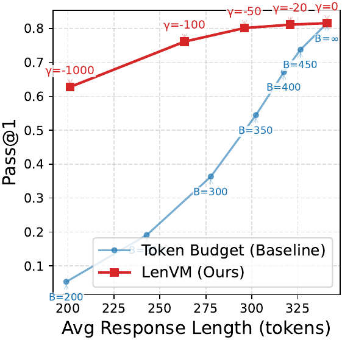
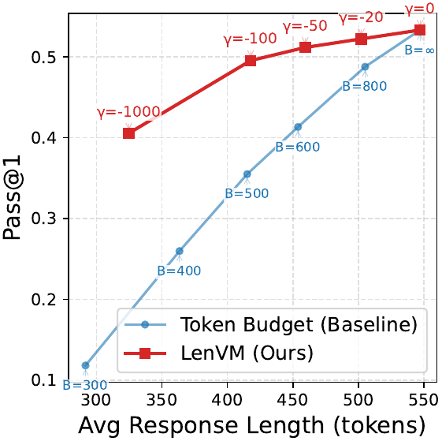
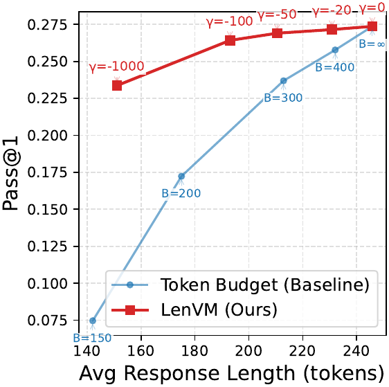
Prompt-Boundary Prediction
| Model Size | Math ↓ | Code ↓ | IF ↓ |
|---|---|---|---|
| 1.5B | 17.0% | 29.0% | 33.0% |
| 3B | 13.6% | 24.0% | 27.2% |
| 7B | 11.0% | 19.5% | 23.0% |
| 14B | 10.4% | 17.0% | 19.8% |
| 32B | 9.8% | 14.9% | 17.1% |
Analysis
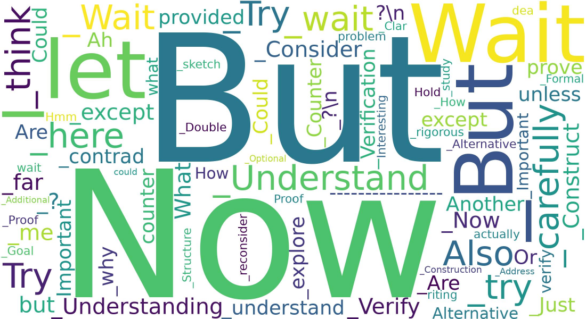
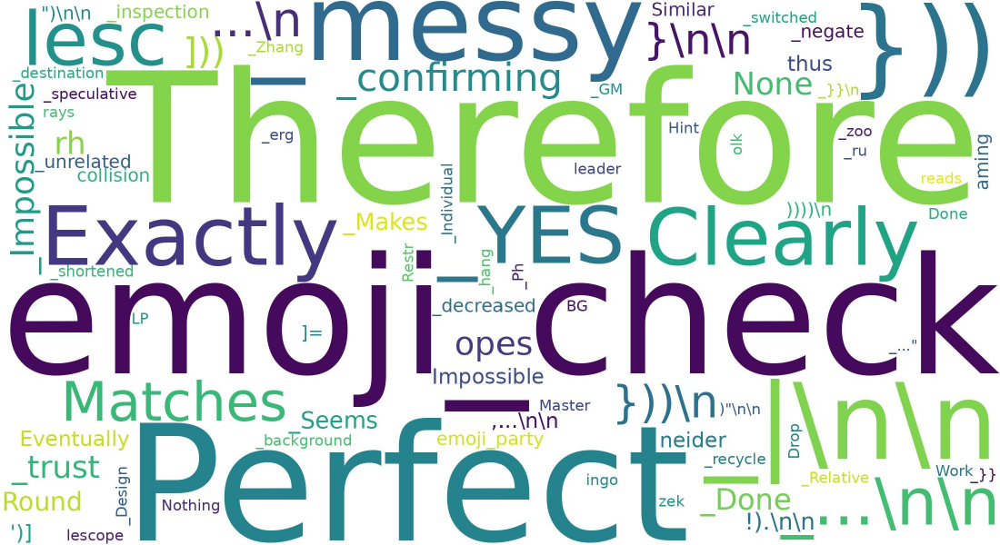
Beyond prediction and control, LenVM also offers a qualitative view of where generation shifts toward longer or shorter continuations. We analyze tokens that repeatedly co-occur with upward or downward changes in LenVM's predicted remaining horizon, and refer to them as length tokens. Using the one-step TD-style score \( s_t = r_{t-1} + \gamma V_t - V_{t-1} \), positive values indicate a shift toward a longer expected continuation, while negative values indicate a shift toward a shorter one.
Positive length tokens often resemble local reasoning pivots such as "ah", "but", "now", "wait", "let", "think", "try", and "consider". By contrast, negative length tokens are more often associated with closure, confirmation, or answer finalization. This analysis is descriptive rather than causal, but it shows that LenVM provides a simple token-level lens on generation dynamics.
Scalability
One of the main claims of the paper is that length supervision is naturally scalable. Validation loss improves not only with larger backbone models, but also with more training questions and more sampled completions per question, showing that the objective benefits from both data breadth and trajectory density.
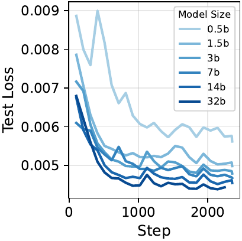
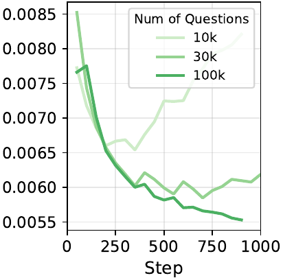
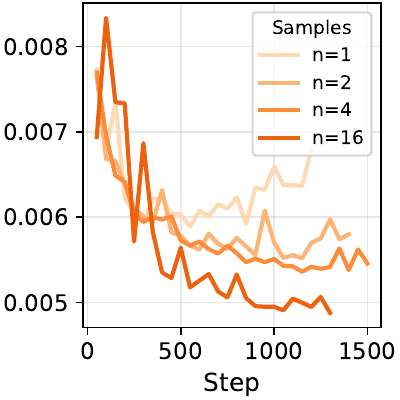
Ablations
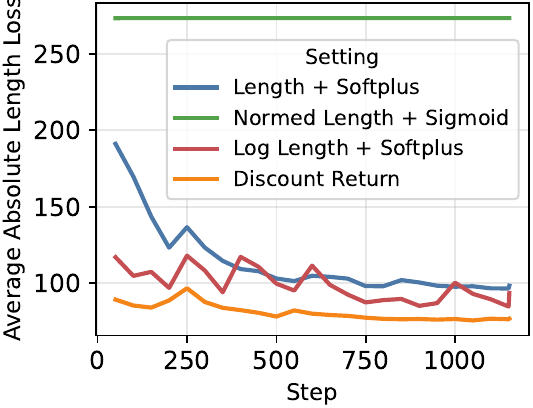
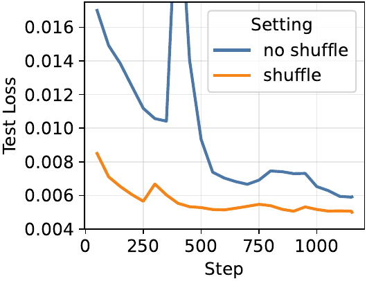
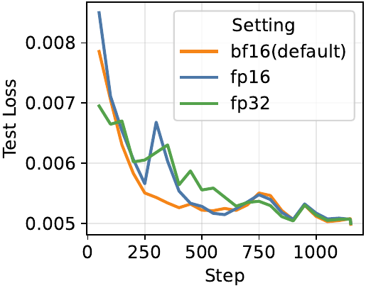
Paper
@misc{zhang2026lengthvaluemodel,
title = {Length Value Model: Scalable Value Pretraining for Token-Level Length Modeling},
author = {Zhen Zhang and Changyi Yang and Zijie Xia and Zhen Yang and Chengzhi Liu and Zhaotiao Weng and Yepeng Liu and Haobo Chen and Jin Pan and Chenyang Zhao and Yuheng Bu and Alkesh Patel and Zhe Gan and Xin Eric Wang},
year = {2026},
url = {https://length-value-model.github.io/}
}